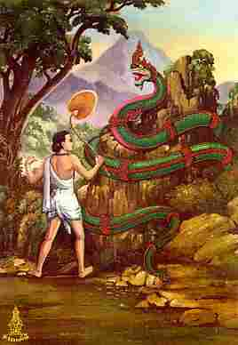

|

|
เรื่องย่อ
���������������ชาดกเรื่องนี้แสดงถึงการบำเพ็ญศีลบารมี
คือการารักษาศีล. มีเรื่องเล่าว่า ภูริทัตตนาคราชไปจำศีลอยู่ริมฝั่งแม่น้ำยมุนา.
ยอมอดทนให้หมองูจับไปทรมานต่าง ๆ ทั้ง ๆ ที่สามารถจะทำลายหมองูได้ด้วยฤทธิ์
มีใจตั้งมั่นต่อศีลของตน ในที่สุดก็ได้อิสรภาพ.
|
|
เรื่องราวในชาดกโดยย่อ
�������������
���������������พระราชาพระองค์หนึ่ง
พระนามว่า "พรหมทัต" ครอง ราชสมบัติอยู่ที่เมืองพาราณสี
พระโอรสทรงดำรง ตำแหน่งอุปราช อยู่ต่อมาพระราชาทรงระแวงว่า พระโอรสจะคิดขบถ
แย่งราชสมบัติ จึงมีโองการให้ พระโอรสออกไปอยู่ให้ไกลเสียจากเมือง
จนกว่าพระราชา จะสิ้นพระชนม์จึงให้กลับมารับราชสมบัติ พระโอรสก็ปฏิบัติ
ตามบัญชา เสด็จไปบวชอยู่ที่บริเวณแม่น้ำชื่อว่า "ยุมนา" มีนางนาคตนหนึ่งสามีตาย ต้องอยู่แต่เพียงลำพัง
เกิดความ ว้าเหว่จนไม่อาจทนอยู่ในนาคพิภพได้ จึงขึ้น มาจากน้ำ
ท่องเที่ยวไปตามริมฝั่งมาจนถึงศาลาที่พักของพระราชบุตร นางนาคประสงค์จะลองใจดูว่า
นักบวชผู้พำนักอยู่ในศาลานี้ จะเป็นผู้ที่บวชด้วยใจเลื่อมใสอย่างแท้จริงหรือไม่
จึงจัดประดับ ประดาที่นอนในศาลานั้นด้วยดอกไม้หอม และของทิพย์จาก
เมืองนาค ครั้นพระราชบุตรกลับมา เห็นที่นอนจัดงดงาม น่าสบายก็ยินดีประทับนอนด้วยความสุขสบายตลอดคืน
รุ่งเช้าก็ออกจากศาลาไป นางนาคก็แอบดู พบว่าที่นอน มีรอยคนนอน
จึงรู้ว่านักบวชผู้นี้มิได้บวชด้วยความศรัธรา เต็มเปี่ยม ยังคงยินดีในของสวยงาม
ตามวิสัยคนมีกิเลส จึงจัดเตรียมที่นอนไว้ดังเดิมอีก ในวันที่สาม
พระราชบุตรมีความสงสัยว่า ใครเป็นผู้จัด ที่นอนอันสวยงามไว้
จึงไม่เสด็จออกไปป่า แต่แอบดูอยู่บริเวณ ศาลานั่นเอง เมื่อนางนาคเข้ามาตกแต่งที่นอน
พระราชบุตร จึงไต่ถามนางว่า นางเป็นใครมาจากไหน นางนาคตอบว่า
นางเป็นนาคชื่อมาณวิกา นางว้าเหว่าที่สามีตาย จึงออกมา ท่องเที่ยวไป
พระราชบุตรมีความยินดีจึงบอกแก่นางว่า หากนางพึงพอใจจะอยู่ที่นี่
พระราชบุตรก็จะอยู่ด้วยกับนาง นางนาคมาณวิกาก็ยินดี ทั้งสองจึงอยู่ด้วยกันฉันสามีภรรยา
จนนางนาคประสูติโอรสองค์หนึ่ง ชื่อว่า "สาครพรหมทัต"
ต่อมาก็ประสูติพระธิดาชื่อว่า "สมุทรชา"
���������������
ครั้นเมื่อพระเจ้าพรหมทัตสวรรคต บรรดาเสนาอำมาตย์ ทั้งหลายไม่มีผู้ใดทราบว่าพระราชบุตรประทับ
อยู่ ณ ที่ใด บังเอิญพรานป่าผู้หนึ่งเข้ามาแจ้งข่าวว่า ตนได้เคยเที่ยวไปแถบ
แม่น้ำยมุนา และได้พบพระราชบุตรประทับอยู่บริเวณนั้นอำมาตย์
จึงได้จัดกระบวนไปเชิญเสด็จพระราชบุตรกลับมาครองเมือง พระราชบุตรทรงถามนางนาคมาณวิกาว่า
จะไปอยู่ เมืองพาราณสีด้วยกันหรือไม่ นางนาคทูลว่า "วิสัยนาค
นั้นโกรธง่ายและมีฤทธิ์ร้าย หากหม่อมฉันเข้าไปอยู่ในวัง แล้วมีผู้ใดทำให้โกรธ
เพียงหม่อมฉัน ถลึงตามอง ผู้นั้นก็จะ มอดไหม้ไป พระองค์พาโอรสธิดากลับไปเถิด
ส่วนหม่อมฉัน ขอทูลลากลับไปอยู่เมืองนาค ตามเดิม" พระราชบุตรจึงพา
โอรสธิดากลับไปพาราณสีอภิเษกเป็นพระราชา อยู่มาวันหนึ่ง ขณะที่โอรสธิดาเล่นน้ำอยู่ในสระ
เกิดตกใจกลัวเต่า ตัวหนึ่ง พระบิดาจึงให้คนจับเต่านั้นไป ทิ้งที่วันน้ำวนในแม่น้ำ
ยมุนา เต่าจมลงไปถึงเมืองนาค เมื่อถูกพวกนาคจับไว้ เต่าก็ออก
อุบาย บอกแก่ นาคว่า "เราเป็นทูตของพระราชาพาราณสี
พระองค์ ให้เรามาเฝ้าท้าวธตรฐ พระราชทานพระธิดาให้เป็นพระชายา
ของท้าวธตรฐ เมืองพาราณสีกับนาคพิภพจะได้เป็นไมตรีกัน" ท้าวธตรฐทรงทราบก็ยินดี
สั่งให้นาค 4 ตนเป็นทูตนำ บรรณาการไปถวายพระราชาพาราณสีและขอรับตัว
พระธิดามาเมืองนาค พระราชาทรงแปลกพระทัย จึงตรัสกับ นาคว่า "มนุษย์กับนาคนั้นต่างเผ่าพันธุ์กัน จะแต่งงานกัน นั้นย่อมเป็นไปไม่ได้"
เหล่านาคได้ฟังดังนั้น จึงกลับไปกราบทูลท้าวธตรฐว่า พระราชาพาราณสีทรงดูหมิ่นว่านาคเป็นเผ่าพันธุ์งู
ไม่คู่ควรกับพระธิดา ท้าวธตรฐทรงพิโรธ ตรัสสั่งให้ฝูงนาค ขึ้นไปเมืองมนุษย์
ไปเที่ยวแผ่พังพานแสดง อิทธิฤทธิ์อำนาจ ตามที่ต่างๆ แต่มิให้ทำอันตรายชาวเมือง
ชาวเมืองพากันเกรงกบัวนาคจนไม่เป็นอันทำมาหากิน
���������������
ในที่สุดพระราชาก็จำพระทัยส่ง นางสมุทรชา ให้ไปเป็นชายา ท้าวธตรฐ
นางสมุทรชาไปอยู่เมืองนาคโดยไม่รู้ว่าเป็นเมืองนาค เพราะท้าวธตรฐให้เหล่า
บริวารแปลงกายเป็นมนุษย์ทั้งหมด นางอยู่นาคพิภพด้วยความสุขสบาย
จนมีโอรส 4 องค์ ชื่อว่า สุทัศนะ ทัตตะ สุโภคะ และ อริฏฐะ อยู่มาวันหนึ่ง
อริฏฐะได้ฟังนาคเพื่อนเล่นบอกว่า พระมารดาของตนไม่ใช่นาค จึงทดลองดูโดยเนรมิต
กายกลับเป็นงู ขณะที่กำลังกินนมแม่อยู่ นางสมุทรชาเห็นลูก กลายเป็นงูก็ตกพระทัย
ปัดอริฏฐะตกจากตัก เล็บของนาง ไปข่วนเอานัยน์ตาอรฏฐะบอกไปข้างหนึ่ง
ตั้งแต่นั้นมา นางจึงรู้ว่าได้ลงมาอยู่เมืองนาค ครั้นเมื่อพระโอรสทั้ง
4 เติบโตขึ้น ท้าวธตรฐก็ทรงแบ่งสมบัติ ให้ครอบครองคนละเขต ทัตตะผู้เป็นโอรส
องค์ที่สองนั้น มาเฝ้าพระบิามารดาอยู่เป็นประจำ ทัตตะเป็นผู้มีปัญญาเฉลียวฉลาดได้ช่วยพระบิดาแก้ไข
ปัญหาต่าง ๆ อยู่เป็นนิตย์ แม้ปัญหาที่เกิดขึ้นกับเทวดา ทัตตะก็แก้ไขได้จึงได้รับการยกย่อง
สรรเสริญว่า เป็นผู้ปรีชาสามารถ ได้รับขนานนามว่า ภูริทัตต์
คือ ทัตตะผู้เรืองปัญญา ภูริทัตต์ได้เคยไปเห็นเทวโลก ว่าเป็นที่น่ารื่นรมย์จึงตั้งใจว่า
จะรักษาอุโบสถศีลเพื่อจะได้ไปเกิดใน เทวโลก จึงทูลขออนุญาตพระบิดา
ก็ได้รับอนุญาต แต่ท้าวธตรฐสั่งว่า มิให้ออกไปรักษาอุโบสถนอกเขตเมืองนาค
เพราะอาจเป็นอันตราย
���������������
ครั้นเมื่อรักษาศีลอยู่ในเมืองนาค ภูริทัตต์ รำคาญว่าพวกฝูงนาคบริวาร
ได้ห้อมล้อมปรนนิบัติเฉพาะในตอนเช้าเท่านั้น ตั้งแต่นั้นมา ภูริทัตต์ก็ขึ้นไปรักษาอุโบสถศีลอยู่ที่จอมปลวก
ใกล้ต้นไทรริมแม่น้ำยมุนา ภูริทัตต์ตั้งจิตอธิษฐานว่า แม้ผู้ใดจะต้องการหนัง
เอ็น กระดูก เลือดเนื้อของตน ก็จะยอมบริจาคให้ ขอเพียงให้ได้รักษาศีลให้บริสุทธิ์
���������������
ครั้งนั้นมีนายพรานชื่อ เนสาท ออกเที่ยวล่าสัตว์ เผอิญได้ พบภูริทัตต์เข้า
สอบถามรู้ว่าเป็นโอรสของ ราชาแห่งนาค ภูริทัตต์เห็นว่าเนสาทเป็นพรานมีใจบาปหยาบช้า
อาจเป็น อันตรายแก่ตน จึงบอกแก่ พรานเนสาทว่า
"เราจะพาท่าน กับลูกชาย ไปอยู่เมืองนาคของเรา ท่านทั้งสองจะมีความสุข
สบายในเมืองนาคนั้น" พรานเนสาทลงไปอยู่เมืองนาค ได้ไม่นาน
เกิดคิดถึงเมืองมนุษย์จึงปรารภกับภูริทัตต์ว่า "ข้าพเจ้าอยากจะกลับไปเยี่ยมญาติพี่น้อง แล้วจะออกบวช รักษาศีลอย่างท่านบ้าง"
ภูริทัตต์รู้ด้วยปัญญาว่าพรานจะเป็นอันตรายแก่ตน แต่ก็ไม่ทราบจะทำอย่างไรดี
จึงต้องพาพรานกลับไปเมืองมนุษย์ พรานพ่อลูกก็ออกล่าสัตว์ต่อไปตามเดิม
มีพญาครุฑตนหนึ่งอาศัยอยู่บนต้นงิ้ว ทางมหาสมุทรด้านใต้
���������������
วันหนึ่งขณะออกไปจับนาคมากิน นาคเอาหางพันกิ่งไทรที่อยู่ ท้ายศาลาพระฤาษี
จนต้นไทรถอนรากติดมาด้วย ครั้นครุฑ ฉีกท้องนาคกินมันเหลว แล้วทิ้งร่างนาคลงไป
จึงเห็นว่า มีต้นไทรติดมาด้วย ครุฑรู้สึกว่าได้ทำผิด คือถอนเอาต้นไทรที่พระฤาษี
เคยอาศัยร่มเงา จึงแปลงกายเป็นหนุ่มน้อยไปถามพระฤาษีว่า เมื่อต้นไทรถูกถอนเช่นนี้
กรรมจะตกอยู่กับใคร พระฤาษีตอบว่า "ทั้งครุฑและนาคต่างก็ไม่มี
เจตนาจะถอนต้นไทรนั้น กรรมจึงไม่มีแก่ผู้ใดทั้งสิ้น" ครุฑดีใจจึงบอกกับพระฤาษีว่าตนคือครุฑ
เมื่อพระฤาษี ช่วยแก้ปัญหาให้ตนสบายใจขึ้นก็จะสอนมนต์ชื่อ อาลัมพายน์
อันเป็นมนต์สำหรับครุฑใช้จับนาค ให้แก่พระฤาษี
���������������
อยู่มาวันหนึ่ง มีพราหมณ์ซึ่งเป็นหนี้ชาวเมืองมากมาย จนคิดฆ่าตัวตาย
จึงเข้าไปในป่า เผอิญได้พบพระฤาษี จึงเปลี่ยนใจ อยู่ปรนนิบัติพระฤาษีจนพระฤาษีพอใจ
สอนมนต์อาลัมพายน์ ให้แก่พราหมณ์นั้น พราหมณ์เห็นทางจะเลี้ยงตนได้
จึงลาพระฤาษีไป เดินสาธยายมนต์ไปด้วย นาคที่ขึ้นมาเล่นน้ำ ได้ยินมนต์ก็ตกใจ
นึกว่าครุฑมา ก็พากันหนีลงน้ำไปหมด ลืมดวงแก้วสารพักนึกเอาไว้บนฝั่ง
พราหมณ์หยิบดวงแก้วนั้นไป ฝ่ายพรานเนสาทก็เที่ยวล่าสัตว์อยู่
เห็นพราหมณ์เดินถือ ดวงแก้วมา จำได้ว่าเหมือนดวงแก้วที่ภูริทัตต์
เคยให้ดู จึงออกปากขอ และบอกแก่พราหมณ์ว่า หากพราหมณ์ ต้องการอะไรก็จะหามาแลกเปลี่ยน
พราหมณ์บอกว่าต้องการ รู้ที่อยู่ของนาค เพราะตนมีมนต์จับนาค
พรานเนสาทจึงพา ไปบริเวณที่รู้ว่า ภูริทัตต์เคยรักษาศีลอยู่
เพราะความโลภ อยากได้ดวงแก้ว โสมทัตผู้เป็นลูกชาย เกิดความละอายใจที่บิดาไม่ซื่อสัตย์
คิดทำร้ายมิตร คือภูริทัตต์ จึงหลบหนีไป ในระหว่างทาง เมื่อไปถึงที่ภูริทัตต์รักษาศีลอยู่
���������������
ภูริทัตต์ลืมตาขึ้นดูก็รู้ว่า พราหมณ์คิดทำร้ายตน แต่หากจะตอบโต้
ถ้าพราหมณ์เป็น อันตรายไป ศีลของตนก็จะขาด ภูริทัตต์ปรารถนาจะรักษาศีล
ให้บริสุทธิ์จึงหลับตาเสีย ขดกายแน่นิ่งไม่เคลื่อนไหว พราหมณ์ก็ร่ายมนต์อาลัมพายน์
เข้าไปจับภูริทัตต์ไว้กด ศีรษะอ้า ปากออก เขย่าให้สำรอกอาหารออกมา
และทำร้าย จนภูริทัตต์เจ็บปวดแทบสิ้นชีวิต แต่ก็มิได้โต้ตอบ
พราหมณ์จับ ภูริทัตต์ใส่ย่ามตาข่าย แล้วนำไปออกแสดงให้ประชาชนดูเพื่อหาเงิน
พราหมณ์บังคับให้ภูริทัตต์แสดงฤทธิ์ต่างๆ ให้เนรมิตตัวให้ ใหญ่บ้าง
เล็กบ้าง ให้ขด ให้คลาย แผ่พังพาน ให้ทำสีกายเป็น สีต่างๆ พ่นไฟ
พ่นควัน พ่นน้ำ ภูริทัตต์ก็ยอมทุกอย่าง ชาวบ้าน ที่มาดูเวทนาสงสาร
จึงให้ ข้าวของเงินทอง พราหมณ์ก็ยิ่งโลภ พาภูริทัตต์ไปเที่ยวแสดง
จนมาถึงเมืองพาราณสี จึงกราบทูล พระราชาว่าจะให้นาคแสดงฤทธิ์ถวายให้ทอดพระเนตร
���������������
ขณะนั้นสมุทรชา ผิดสังเกตที่ภูริทัตต์หายไป ไม่มาเฝ้า จึงถามหา
ในที่สุดก็ทราบว่า ภูริทัตต์หายไป พี่น้องของภูริทัตต์ จึงทูลว่าจะออกติดตาม
สุทัศนะจะไปโลกมนุษย์ สุโภคะไป ป่าหิมพานต์ อริฏฐะไปเทวโลก ส่วนนางอัจจิมุข
ผู้เป็นน้องสาวต่างแม่ของภูริทัตต์ของตามไปกับสุทัศนะพี่ชายใหญ่ด้วย
เมื่อติดตามมาถึงเมืองพาราณสี สุทัศนะก็ได้ข่าวว่ามีนาค ถูกจับมาแสดงให้คนดู
จึงตามไปจนถึงบริเวณที่แสดง ภูริทัตต์เห็นพี่ชาย จึงเลื้อยไข้าไปหาซบหัวร้องไห้อยู่ที่เท้า
ของสุทัศนะแล้วจึงเลื้อยกลับไปเข้าที่ขัง ของตนตามเดิม พราหมณ์จึงบอกกับสุทัศนะว่า
"ท่านไม่ต้องกลัว ถึงนาคจะกัดท่านไม่ช้าก็จะหาย" สุทัศนะตอบว่า
"เราไม่กลัวดอก นาคนี้ไม่มีพิษ ถึงกัดก็ไม่มีอันตราย" พราหมณ์หาว่าสุทัศนะ
ดูหมิ่นว่าตน เอานาคไม่มีพิษมาแสดง จึงเกิดการโต้เถียงกันขึ้น
สุทัศนะจึงท้าว่า "เขียดตัวน้อยของเรานั้นยังมีพิษมากกว่า นาคของท่านเสียอีก จะเอามาลองฤทธิ์กันดูก็ได้"
พราหมณ์ กล่าวว่าหากจะให้สู้กัน ก็ต้องมีเดิมพันจึงจะสมควร สุทัศนะจึง
ทูลขอพระราชาพาราณสีให้เป็นผู้ประกันให้ตน โดยกล่าวว่า พระราชาจะได้ทอด
พระเนตรการต่อสู้ระหว่างนาคกับเขียด เป็นการตอบแทน พระราชาก็ทรงยอมตกลงประกันให้แก่
สุทัศนะ สุทัศนะเรียก นางอัจจิมุข ออกมาจากมวยผมให้คายพิษ ลงบนฝ่ามือ
3 หยด แล้วทูลว่า "พิษของเขียดน้อยนี้แรงนัก เพราะนางเป็นธิดาท้าวธตรฐ ราชาแห่งนาค
หากพิษนี้หยดลง บนพื้นดิน พืชพันธุ์ไม้จะตายหมด หากโยนขึ้นไปในอากาศ
ฝนจะไม่ตกไป 7 ปี ถ้าหยดลงในน้ำสัตว์น้ำจะตายหมด" พระราชาไม่ทราบจะทำอย่างไรดี
สุทัศนะจึงทูลขอให้ ขุดบ่อ 3 บ่อบ่อแรกใส่ยาพิษ บ่อที่สองใส่โคมัย
บ่อที่สามใส่ยาทิพย์ แล้วจึงหยดพิษลงในบ่อแรก ก็เกิดควันลุกจนเป็นเปลวไฟ
ลามไปติดบ่อที่สองและสาม จนกระทั่งยาทิพย์ไหม้หมด ไฟจึงดับ
���������������
พราหมณ์ตัวร้าย ซึ่งยืนอยู่ข้างบ่อ ถูกไอพิษจนผิวหนังลอก กลายเป็นขี้เรื้อน
ด่างไปทั้งตัว จึงร้องขึ้นว่า "ข้าพเจ้ากลัวแล้ว ข้าพเจ้าจะ ปล่อยนาคนั้นให้เป็นอิสระ" ภูริทัตต์ได้ยินดังนั้น
ก็เลื้อยออกมาจากที่ขัง เนรมิตกาย เป็นมนุษย์ พระราชาจึงตรัสถามความเป็นมา
ภูริทัตต์จึงตอบว่า "ข้าพเจ้าและพี่น้องเป็นโอรสธิดาของท้าวธตรฐราชาแห่งนาคกับ นางสมุทรชา
ข้าพเจ้ายอมถูกจับมา ยอมให้พราหมณ์ทำร้ายจน บอบช้ำ เพราะปราถนาจะรักษาศีล
บัดนี้ข้าพเจ้าเป็น อิสระแล้ว จึงขอลากลับไปเมืองนาคตามเดิม"
���������������
พระราชาทรงดีพระทัยเพราะทราบว่าภูริทัตต์เป็นโอรสของ นางสมุทรชา
น้องสาวของพระองค์ที่บิดายกให้แก่ราชานาคไป จึงเล่าให้ภูริทัตต์และพี่น้องทราบว่า
เมื่อนางสมุทรชาไปสู่ เมืองนาคแล้ว พระบิดาก็เสียพระทัย จึงสละราชสมบัติ
ออกบวช พระองค์จึงได้ครองเมืองพาราณสีต่อมา พระราชาประสงค์จะให้
นางสมุทรชาและบรรดาโอรสได้ไปเฝ้าพระบิดา จะได้ทรงดีพระทัย สุทัศนะทูลพระราชาว่า
"ข้าพเจ้าจะ กลับไปทูลให้พระมารดาทราบ ขอให้พระองค์
ไปรออยู่ที่อาศรมของพระอัยกาเถิด ข้าพเจ้าจะพา พระมารดาและพี่น้องตามไปภายหลัง"
ทางฝ่ายพรานเนสาท ผู้ทำร้ายภูริทัตต์เพราะหวังดวงแก้ว สารพัดนึก
เมื่อตอนที่พราหมณ์โยนดวงแก้วให้ นั้น รับไม่ทัน ดวงแก้วจึงตกลงบนพื้นและแทรกธรณีกลับไปสู่เมืองนาค
พรานเนสาทจึงสูญเสียดวงแก้ว สูญเสียลูกชาย และเสียไมตรี กับภูริทัตต์
เที่ยวซัดเซพเนจรไป
���������������
ครั้นได้ข่าวว่าพราหมณ์ผู้จับ นาคกลายเป็น โรคเรื้อนเพราะพิษนาค
ก็ตกใจกลัว ปราถนาจะล้างบาป จึงไปยังริมน้ำยมุนา ประกาศว่า
"ข้าพเจ้าได้ ทำร้ายมิตร คือ ภูริทัตต์ ข้าพเจ้าปราถนาจะล้างบาป"
พรานกล่าวประกาศอยู่ หลายครั้ง เผอิญขณะนั้น สุโภคะกำลังเที่ยวตามหาภูริทัตต์อยู่
ได้ยินเข้าจึงโกรธแค้น เอาหางพันขาพราน ลากลงน้ำให้จมแล้ว ลากขึ้นมาบนดินไม่ให้ถึงตาย
ทำอยู่เช่นนั้นหลายครั้ง พรานจึงร้องถามว่า
"นี่ตัวอะไรกัน ทำไมมาทำร้าย เราอยู่เช่นนี้ ทรมาณเราเล่นทำไม"
สุโภคะตอบว่าตนเป็นลูกราชานาค
���������������
พรานจึงรู้ว่าเป็นน้องภูริทัตต์ ก็อ้อนวอนขอให้ปล่อยและกล่าวแก่สุโภคะว่า
"ท่านรู้หรือไม่ เราเป็นพราหมณ์ ท่านไม่ควร
ฆ่าพราหมณ์ เพราะพราหมณ์เป็นผู้บูชาไฟ เป็นผู้ทรงเวทย์ และเลี้ยงชีพด้วยการขอ
ท่านไม่ควรทำร้ายเรา" สุโภคะไม่ทราบจะตัดสินใจอย่างไร
จึงพาพรานเนสาทลงไปเมืองนาค คิดจะไปขอถามความเห็นจากพี่น้อง
เมื่อไปถึงประตูเมืองนาค ก็พบอริฏฐะนั่งรออยู่ อริฏฐะนั้นเป็นผู้เลื่อมใสพราหมณ์
ครั้นรู้ว่าพี่ชายจับพราหมณ์มา จึงกล่าวสรรเสริญคุณของพราหมณ์
สรรเสริญความยิ่งใหญ่แห่งพรหม และกล่าวว่าพราหมณ์เป็นบุคคล ที่ไม่สมควรจะถูกฆ่า
ไม่ว่าด้วยเหตุผลใดๆ การฆ่าพราหมณ์ซึ่ง เป็นผู้บูชาไฟนั้นจะทำ
ให้เกิดความเสียหายใหญ่หลวง สุโภคะกำลังลังเลใจ ไม่ทราบจะทำอย่างไร
พอดีภูริทัตต์กลับมาถึง ได้ยินคำของอริฏฐะจึงคิดว่า อริฏฐะ นั้นเป็นผู้เลื่อมใสพราหมณ์
และการบูชายัญของพราหมณ์ จำเป็นที่จะต้องกล่าววาจาหักล้าง มิให้ผู้ใด
คล้อยตามในทางที่ผิด
���������������
ภูริทัตต์จึงกล่าวชี้แจงแสดง ความเป็นจริง และในที่สุดได้กล่าวว่า
"การบูชาไฟนั้น หาได้เป็น การบูชาสูงสุดไม่ หากเป็นเช่นนั้น
คนเผาถ่าน คนเผาศพ ก็สมควรจะได้รับยกย่องว่าเป็นผู้บูชา ไฟยิ่งกว่าพราหมณ์
หากการบูชาไฟเป็นสูงสุด การเผาบ้านเมืองก็คงได้บุญสูงสุด แต่หาเป็นเช่นนั้นไม่
หากการบูชายัญจะเป็นบุญสูงสุดจริง พราหมณ์ก็น่าจะเผาตนเองถวายเป็นเครื่องบูชา
แต่พราหมณ์กลับ บูชาด้วยชีวิตของผู้อื่น เหตุใดจึงไม่เผาตนเองเล่า"
���������������
อริฏฐะกล่าวว่า พรหมเป็นผู้ทรงคุณยิ่งใหญ่ เป็นผู้สร้างโลก ภูริทัตต์ตอบว่า "หากพรหมสร้างโลกจริง ไฉนจึงสร้างให้โลกมีความทุกข์ ทำไมไม่สร้างให้โลกมีแต่ความสุข
ทำไมพรหมไม่สร้างให้ทุกคนมีความเท่าเทียมกัน เหตุใดจึงแบ่งคนเป็น
ชั้นวรรณะ คนที่อยู่ในวรรณะต่ำ เช่น ศูทร จะไม่มีโอกาสมีความสุขเท่าเทียมผู้อื่นได้เลย
พราหมณ์ต่างหากที่พยายาม ยกย่องวรรณะของตนขึ้นสูง และเหยียดหยามผู้อื่นให้ต่ำกว่า
โดยอ้างว่าพราหมณ์เป็นผู้รับใช้พรหม เช่นนี้จะถือว่าพราหมณ์ทรงคุณยิ่งใหญ่ได้อย่างไร"
ภูริทัตต์กล่าววาจาหักล้างอริฏฐะด้วยความเป็นจริง ซิ่งอริฏฐะ
ไม่อาจโต้เถียงได้
���������������
ในที่สุดภูริทัตต์จึงสั่งให้ นำพรานเนสาทไปเสีย จากเมืองนาค
แต่ไม่ให้ทำอันตรายอย่างใด จากนั้นภูริทัตต์ก็พา พี่น้องและนางสมุทรชาผู้เป็นมารดา
กลับไปเมืองมนุษย์ เพื่อไป เฝ้าพระบิดา พระเชษฐาของนางที่รอคอยอยู่แล้ว
เมื่อญาติพี่น้องทั้งหลายพากันแยกย้ายกลับบ้านเมือง
���������������
ภูริทัตต์ขออยู่ที่ศาลากับพระอัยกา บำเพ็ญเพียร รักษาอุโบสถศีล
ด้วยความสงบ ดังที่ได้เคยตั้งปณิธานไว้ว่า
"ข้าพเจ้าจะมั่นคงในการ รักษาศีลให้บริสุทธิ์ จะไม่ให้ศีลต้องมัวหมอง
ไม่ว่าจะต้องเผชิญความ ทุกข์ยากอย่างไร ข้าพเจ้าจะอดทน อดกลั้น
ตั้งมั่นอยู่ ในศีลตลอดไป"
|
คติธรรม : บำเพ็ญศีลบารมี
���������������
ความโลภนั้นเป็นสิ่งชั่วร้ายเช่นเดียวกับการเนรคุณ
แต่ความอดทนย่อมประเสริฐยิ่งนักแล้ว |
--------------------------------------------------------------------------------

กลับหน้าแรก
กลับไปหน้า
Web วัดท่าไทร
ไป
Web วิทยุชุมชนตำบลท่าทองใหม่
|